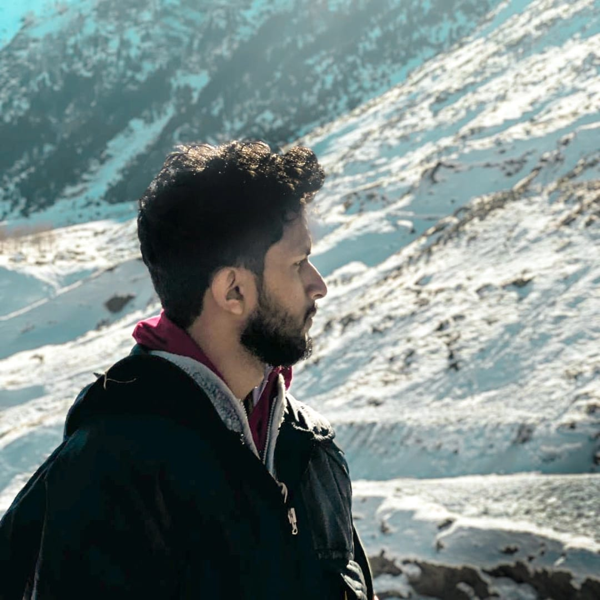

Hello, Im
Razi Ahmed
Frontend Developer


Hello, Im
Frontend Developer
Get To Know More

2+ years
Frontend Development

Bcome bachelor's degreee
M.C.A Masters Degree
I’m an MCA 1st-year student at FISAT Engineering College, passionate about front-end development and creative media. With expertise in HTML, CSS, and JavaScript, I build engaging and user-friendly web experiences. Beyond coding, I have a strong background in video creation and editing, using tools like Adobe After Effects and CapCut to craft visually compelling content. My blend of technical skills and creativity allows me to bring ideas to life, whether through web development or digital media.